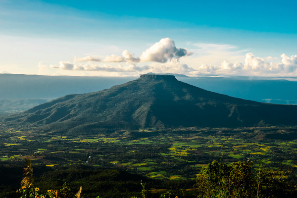

--- ยินดีต้อนรับสู่เว็บไซต์จังหวัดเลย ! ---

ธรรมชาติของจังหวัด
จังหวัดของเรามีภูมิประเทศที่หลากหลายและสวยงามโดยเฉพาะพื้นที่ภูเขาที่ถือเป็นหัวใจของธรรมชาติที่งดงามและยังคงความบริสุทธิ์ไม่ถูกทำลายจากการพัฒนาที่นี่ คุณจะได้พบกับภูเขาที่สูงชัน มีทัศนียภาพอันตระการตาเหมาะสำหรับการเดินป่าและการพักผ่อนในอ้อมกอดของธรรมชาตินอกจากนั้น จังหวัดของเรายังมีน้ำตกที่ไหลลงมาจากยอดเขา สร้างบรรยากาศที่สดชื่นและเงียบสงบและป่าไม้ที่อุดมสมบูรณ์เต็มไปด้วยพืชพรรณและสัตว์ป่าที่หาชมได้ยากซึ่งทั้งหมดนี้ช่วยเสริมสร้างประสบการณ์การเดินทางที่ล้ำค่าและน่าจดจำสำหรับผู้ที่รักธรรมชาติ
วัฒนธรรมของจังหวัด
จังหวัดเลยเป็นหนึ่งในจังหวัดที่ตั้งอยู่ในภาคตะวันออกเฉียงเหนือของประเทศไทย มีวัฒนธรรมที่เป็นเอกลักษณ์และหลากหลาย เนื่องจากพื้นที่นี้เป็นจุดบรรจบของวัฒนธรรมที่แตกต่างกัน รวมถึงวัฒนธรรมลาว ไทย และชนเผ่าต่างๆ ที่อาศัยอยู่ในภูมิภาคนี้ วัฒนธรรมของจังหวัดเลยจึงมีความเป็นเอกลักษณ์และสะท้อนถึงวิถีชีวิต ความเชื่อ และภูมิปัญญาท้องถิ่นที่สืบทอดกันมาอย่างยาวนาน
ประวัติศาสตร์ของจังหวัดเลย (รับชมคลิป)
เกร็ดน่ารู้จังหวัดเลย
- เมืองสามหมอก เลยเป็นจังหวัดที่มีหมอกปกคลุมเกือบตลอดทั้งปี โดยเฉพาะในช่วงฤดูหนาว ทำให้บรรยากาศโรแมนติกและสดชื่นมาก
- ต้นกำเนิดประเพณีผีตาโขน ผีตาโขนเป็นการละเล่นที่มีชื่อเสียง ซึ่งเป็นส่วนหนึ่งของงานบุญหลวง จัดขึ้นทุกปีในอำเภอด่านซ้าย
- แหล่งผลิตมะขามหวาน มะขามหวานของจังหวัดเลยมีชื่อเสียงระดับประเทศ ด้วยรสชาติหวานอมเปรี้ยวและเนื้อสัมผัสกรอบอร่อย
- ภูเรือ: จุดที่หนาวที่สุดในไทย อุทยานแห่งชาติภูเรือเคยมีอุณหภูมิต่ำสุดในประเทศไทยในบางปี ทำให้เป็นจุดหมายปลายทางยอดนิยมในฤดูหนาว
- เชียงคาน เมืองเก่าริมโขง เชียงคานมีบ้านไม้เก่าแบบดั้งเดิมและถนนคนเดินที่เต็มไปด้วยเสน่ห์ ทำให้เป็นสถานที่ท่องเที่ยวยอดนิยมสำหรับผู้ที่ชอบบรรยากาศเงียบสงบ